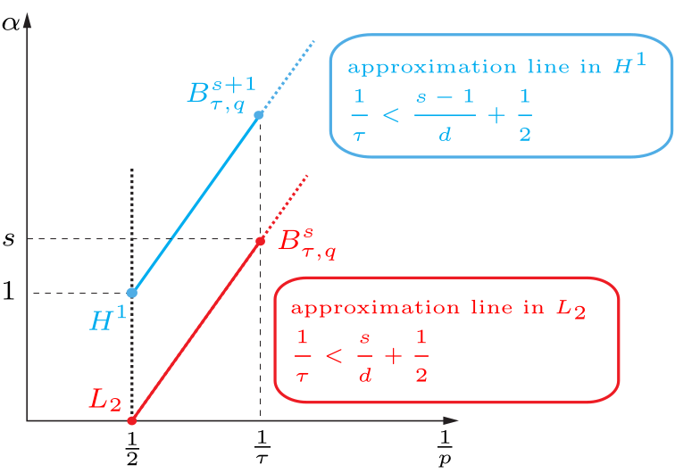

Julian Billner, Samuel Probst, Nick Schneider, Florá SzemenyeiFAU Erlangen-Nürnberg, Germany
Regularity of (S)PDEs on non-smooth domains and manifolds
I study Sobolev and Besov regularity for elliptic, parabolic and hyperbolic problems on domains with corners, edges and other singularities. The central goal is to explain rigorously when adaptive approximation can outperform uniform methods: adaptivity pays off precisely where the Besov regularity of a solution exceeds its Sobolev regularity.
Current directions include evolutionary PDEs, stochastic problems, Lipschitz manifolds and long-term questions connected with the Navier–Stokes equations.
The Besov regularity is usually obtained via weighted Sobolev (Kondratiev) spaces, whose weight measures the distance to the singular set of the domain, while non-adaptive schemes are governed by regularity in fractional Sobolev spaces. For elliptic problems this picture is essentially complete; for hyperbolic conservation laws, regularity results are so far limited to the one-dimensional case.
